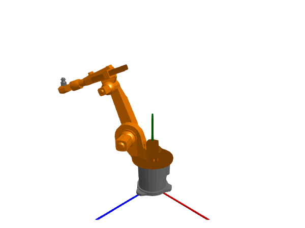

Industrial robot

using Multibody
using ModelingToolkit
using Plots
using JuliaSimCompiler
using OrdinaryDiffEq
using Test
t = Multibody.t
D = Differential(t)
@named robot = Multibody.Robot6DOF(trivial=false)
robot = complete(robot)
length(equations(robot))2094The robot is a medium sized system with some 2000 equations before simplification.
After simplification, the following states are chosen:
ssys = structural_simplify(IRSystem(robot))
unknowns(ssys)36-element Vector{JuliaSimCompiler.ADT.IRElement}:
axis3₊motor₊Jmotor₊phi
axis3₊motor₊La₊i
axis2₊motor₊Jmotor₊phi
axis2₊motor₊La₊i
axis1₊motor₊Jmotor₊phi
axis1₊motor₊La₊i
axis3₊controller₊PI₊int₊x
axis3₊motor₊C₊v
axis2₊motor₊C₊v
axis2₊controller₊PI₊int₊x
⋮
axis3₊motor₊Jmotor₊w
axis2₊motor₊Jmotor₊w
axis1₊motor₊Jmotor₊w
mechanics₊r6₊w
mechanics₊r5₊w
mechanics₊r4₊w
mechanics₊r3₊w
mechanics₊r2₊w
mechanics₊r1₊wprob = ODEProblem(ssys, Dict([
robot.mechanics.r1.phi => deg2rad(-60)
robot.mechanics.r2.phi => deg2rad(20)
robot.mechanics.r3.phi => deg2rad(90)
robot.mechanics.r4.phi => deg2rad(0)
robot.mechanics.r5.phi => deg2rad(-110)
robot.mechanics.r6.phi => deg2rad(0)
robot.axis1.motor.Jmotor.phi => deg2rad(-60) * -105 # Multiply by gear ratio
robot.axis2.motor.Jmotor.phi => deg2rad(20) * 210
robot.axis3.motor.Jmotor.phi => deg2rad(90) * 60
]), (0.0, 2.0))
sol = solve(prob, Rodas5P(autodiff=false));
@test SciMLBase.successful_retcode(sol)
plot(sol, idxs = [
robot.pathPlanning.controlBus.axisControlBus1.angle_ref
robot.pathPlanning.controlBus.axisControlBus2.angle_ref
robot.pathPlanning.controlBus.axisControlBus3.angle_ref
robot.pathPlanning.controlBus.axisControlBus4.angle_ref
robot.pathPlanning.controlBus.axisControlBus5.angle_ref
robot.pathPlanning.controlBus.axisControlBus6.angle_ref
], layout=(4,3), size=(800,800), l=(:black, :dash), legend=:outertop, legendfontsize=6)
plot!(sol, idxs = [
robot.pathPlanning.controlBus.axisControlBus1.angle
robot.pathPlanning.controlBus.axisControlBus2.angle
robot.pathPlanning.controlBus.axisControlBus3.angle
robot.pathPlanning.controlBus.axisControlBus4.angle
robot.pathPlanning.controlBus.axisControlBus5.angle
robot.pathPlanning.controlBus.axisControlBus6.angle
], sp=1:6)
plot!(sol, idxs = [
robot.axis1.controller.feedback1.output.u
robot.axis2.controller.feedback1.output.u
robot.axis3.controller.feedback1.output.u
robot.axis4.controller.feedback1.output.u
robot.axis5.controller.feedback1.output.u
robot.axis6.controller.feedback1.output.u
], sp=7:12, lab="Position error", link=:x)
plot!(xlabel=[fill("", 1, 9) fill("Time [s]", 1, 3)])We see that after an initial transient, the robot controller converges to tracking the reference trajectory well. However, since the first three axes of the robot are modeled as slightly flexible, and we are ultimately interested in the tracking performance after the gear box and any flexibilities it may suffer from, we plot also this tracking error
plot(sol, idxs = [
robot.axis1.controller.feedback1.output.u / ( -105)
robot.axis2.controller.feedback1.output.u / (210)
robot.axis3.controller.feedback1.output.u / (60)
], layout=(1,3), lab="Position error, motor side", link=:x)
plot!(sol, idxs = [
robot.pathPlanning.controlBus.axisControlBus1.angle_ref - robot.mechanics.r1.phi #
robot.pathPlanning.controlBus.axisControlBus2.angle_ref - robot.mechanics.r2.phi #
robot.pathPlanning.controlBus.axisControlBus3.angle_ref - robot.mechanics.r3.phi #
], lab="Position error, arm side")3D animation
Multibody.jl supports automatic 3D rendering of mechanisms, we use this feature to illustrate the result of the simulation below:
import CairoMakie
Multibody.render(robot, sol; z = -5, filename = "robot.gif")